1. Знайдіть джерело кровотечі
2. Оголіть рану таким чином, щоб ви повністю могли її бачити
3. Зробіть огляд та визначте «кровотечу, що загрожує життю»
2. Оголіть рану таким чином, щоб ви повністю могли її бачити
3. Зробіть огляд та визначте «кровотечу, що загрожує життю»
КЛЮЧОВІ ПОЛОЖЕННЯ: Існує багато способів зупинки кровотечі, проте вони всі мають одну спільну особливість - стискання кровоносних судин зупиняє кровотечу.
При кровотечі з кінцівки, що загрожує життю, і у випадку доступності турнікета:
1. Затягніть турнікет навколо кінцівки з кровотечою 5-8 см вище поранення (переконайтеся, що турнікет розташовано НЕ на суглобі - за необхідності – розмістити вище суглоба)
2. Потягніть за липку стрічку турнікета якомога сильніше та зафіксуйте вільний кінець
3. Закрутіть вороток до зупинки кровотечі
4. Зафіксуйте вороток
5. Запишіть час
 Якщо вам доступна аптечка першої допомоги: При кровотечі з кінцівки, що загрожує життю, і у випадку НЕ доступності турнікета АБО При кровотечі, що загрожує життю, в області шиї, плеч або паху:
Тампонуйте (заповніть) рану кровоспинною марлею (т.зв. гемостатиком), звичайною марлею, або чистою тканиною, після чого здійсніть тиск обома руками.
Якщо вам доступна аптечка першої допомоги: При кровотечі з кінцівки, що загрожує життю, і у випадку НЕ доступності турнікета АБО При кровотечі, що загрожує життю, в області шиї, плеч або паху:
Тампонуйте (заповніть) рану кровоспинною марлею (т.зв. гемостатиком), звичайною марлею, або чистою тканиною, після чого здійсніть тиск обома руками.
1. Відкрийте одяг навколо рани.
2. Видаліть надлишки згустків крові.
3. Тампонуйте рану гемостатиком (бажано), звичайною марлею, або чистою тканиною.
4. Одразу здійсніть прямий тиск на рану обома руками.
5. Натискайте якомога сильніше. 6. Утримуйте тиск до прибуття медиків.
Є турнікет
При кровотечі з кінцівки, що загрожує життю, і у випадку доступності турнікета:
1. Затягніть турнікет навколо кінцівки з кровотечою 5-8 см вище поранення (переконайтеся, що турнікет розташовано НЕ на суглобі - за необхідності – розмістити вище суглоба)
2. Потягніть за липку стрічку турнікета якомога сильніше та зафіксуйте вільний кінець
3. Закрутіть вороток до зупинки кровотечі
4. Зафіксуйте вороток
5. Запишіть час
Нема турнікету або поранення шиї, паху або плеч
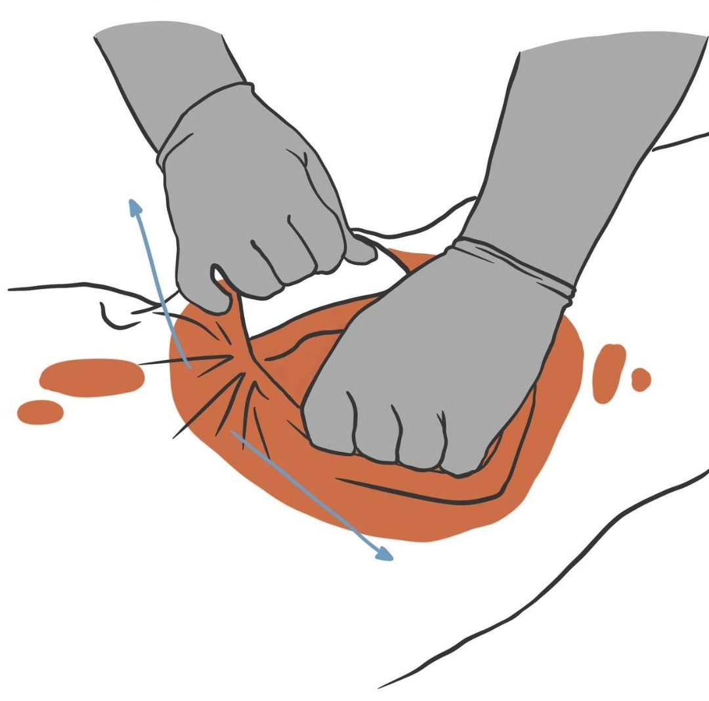
1. Відкрийте одяг навколо рани.
2. Видаліть надлишки згустків крові.
3. Тампонуйте рану гемостатиком (бажано), звичайною марлею, або чистою тканиною.
4. Одразу здійсніть прямий тиск на рану обома руками.
5. Натискайте якомога сильніше. 6. Утримуйте тиск до прибуття медиків.
Зупинка кровотечі немає аптечки
Затромбуйте рану чистою тканиною і застосуйте тиск.
Прямий тиск на рану.
1. Візьміть будьяку чисту тканину (напр., сорочку) і закрийте рану
2. Якщо рана велика і глибока, спробуйте “заповнити” рану тканиною (затромбуйте рану тканиною)
3. Застосуйте прямий тиск обома руками безпосередньо на рану, що є джерелом кровотечі
4. Натискайте якомога сильніше вагою Всього тіла
5. Утримуйте тиск до прибуття медиків, або поки це безпечно для життя того хто рятує
Прямий тиск на рану.
1. Візьміть будьяку чисту тканину (напр., сорочку) і закрийте рану
2. Якщо рана велика і глибока, спробуйте “заповнити” рану тканиною (затромбуйте рану тканиною)
3. Застосуйте прямий тиск обома руками безпосередньо на рану, що є джерелом кровотечі
4. Натискайте якомога сильніше вагою Всього тіла
5. Утримуйте тиск до прибуття медиків, або поки це безпечно для життя того хто рятує
Що таке кровотеча, яка загрожує життю?
1. Кров, що виприскує з рани під тиском.
2. Кров, що постійно витікає з рани. 3. Калюжа крові, яка швидко збільшується.
4. Одяг, просочений кров'ю або пов'язка, просочена кров'ю.
5. Часткова або повна ампутація.
6. Поранений без свідомості або в сплутаному стані.
1. Кров, що виприскує з рани під тиском.
2. Кров, що постійно витікає з рани. 3. Калюжа крові, яка швидко збільшується.
4. Одяг, просочений кров'ю або пов'язка, просочена кров'ю.
5. Часткова або повна ампутація.
6. Поранений без свідомості або в сплутаному стані.
Оцінка загрози для рятувальника
Погляд із укриття. У разі продовження
повітряної тривоги треба залишатися в
укритті (можливі повторні прильоти). Якщо ви бачите поранених і не можете до них дістатися - надайте їм дистанційні поради по самодопомозі (притиснення травмованої ділянки,
накладання турнікету та рух в укриття). За відсутності повітряної тривоги
І зовнішніх загроз, підходьте до постраждалого повільно, оцінюючи ситуацію.
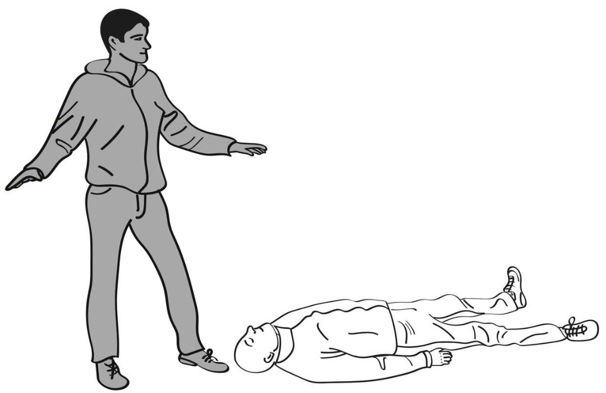
Обов'язкові засоби особистої безпеки
Ви маєте:
1. Вдягти рукавички, тому що потенційно ви будете контактувати з біологічними рідинами (слиною, вмістом шлунку, кров'ю).
2. За можливості, вдягайте захисні окуляри (очі є дуже вразливою зоною за наявності розбризкування біологічних рідин). При потраплянні їх на неушкоджену шкіру ризик зараження мінімальний. Важливо одразу після завершення допомоги вимити руки з милом. 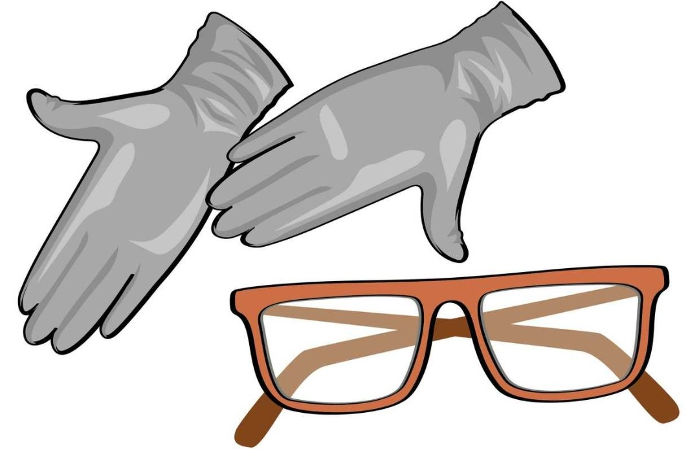
Обов'язкові засоби особистої безпеки
Ви маєте:
1. Вдягти рукавички, тому що потенційно ви будете контактувати з біологічними рідинами (слиною, вмістом шлунку, кров'ю).
2. За можливості, вдягайте захисні окуляри (очі є дуже вразливою зоною за наявності розбризкування біологічних рідин). При потраплянні їх на неушкоджену шкіру ризик зараження мінімальний. Важливо одразу після завершення допомоги вимити руки з милом. 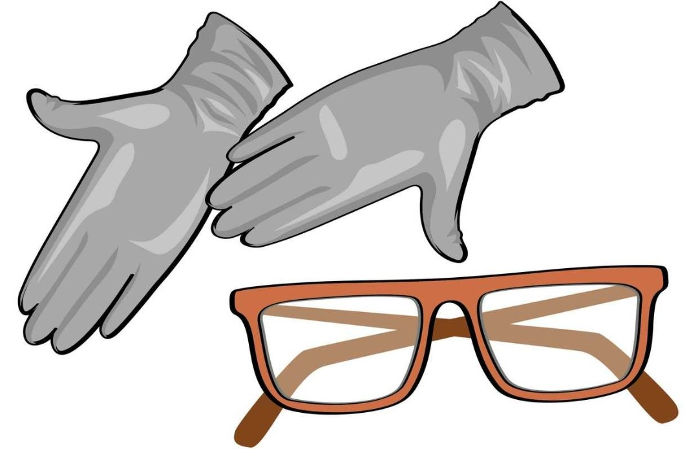
Бажано підходити з боку ніг (для запобігання високоамплітудних рухів головою та шиєю з боку постраждалого).
Якщо ви бачите кров, спочатку зупиніть
кровотечу прямим тиском, джгутом
(турнікетом) або затампонуйте рану.
Детально в розділі Stop The Bleed та/або зупинка кровотеч в ТССС ДОДАТИ ПОСИЛАННЯ НА РОЗДІЛИ В ЗАСТОСУНКУ
У разі відсутності кровотечі або після її зупинки оцінити стан свідомості:
1. Запитати: "Як справи?" або "Що трапилося?"
2. За відсутності відповіді, стати на одне коліно поруч, інше залишити піднятим заради захисту себе від можливого підйому руки постраждалого. Одну з рук тримати напоготові для захисту від другої руки постраждалого. Натиснути трьома пальцями під ключицю постраждало та порухати з боку в бік, перевіряючи наявність реакції на ваші дії. 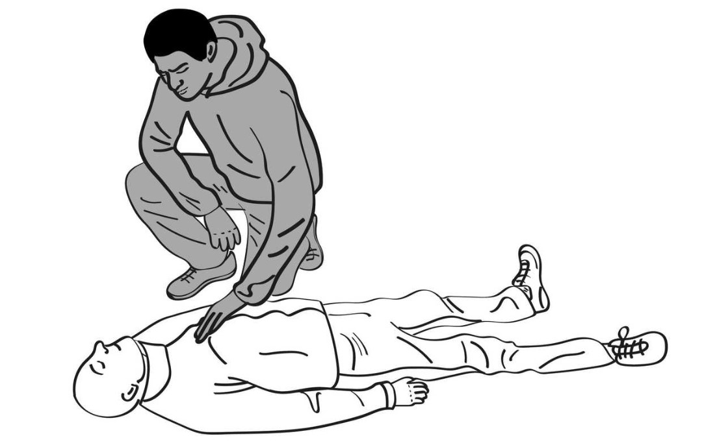
Детально в розділі Stop The Bleed та/або зупинка кровотеч в ТССС ДОДАТИ ПОСИЛАННЯ НА РОЗДІЛИ В ЗАСТОСУНКУ
У разі відсутності кровотечі або після її зупинки оцінити стан свідомості:
1. Запитати: "Як справи?" або "Що трапилося?"
2. За відсутності відповіді, стати на одне коліно поруч, інше залишити піднятим заради захисту себе від можливого підйому руки постраждалого. Одну з рук тримати напоготові для захисту від другої руки постраждалого. Натиснути трьома пальцями під ключицю постраждало та порухати з боку в бік, перевіряючи наявність реакції на ваші дії. 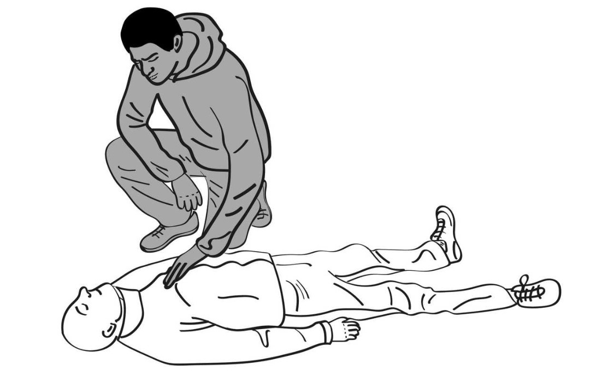
1. Короткочасна втрата свідомості (непритомність/колапс).
2. Тривала втрата свідомості (кома), зі збереженою роботою серця.
3. Свідомість відсутня + відсутнє дихання (зупинка серця).
2. Тривала втрата свідомості (кома), зі збереженою роботою серця.
3. Свідомість відсутня + відсутнє дихання (зупинка серця).
Близько 70% людей протягом життя переживали короткочасну втрату свідомості. Основними причинами цього стану є:
1. Біль.
2. Виснаження.
3. Емоційний стрес (медичні маніпуляції).
4. Перегрів.
5. Перехід з тривалого лежачого стану у вертикальний або сидячий.
6. Гіпервентиляція. 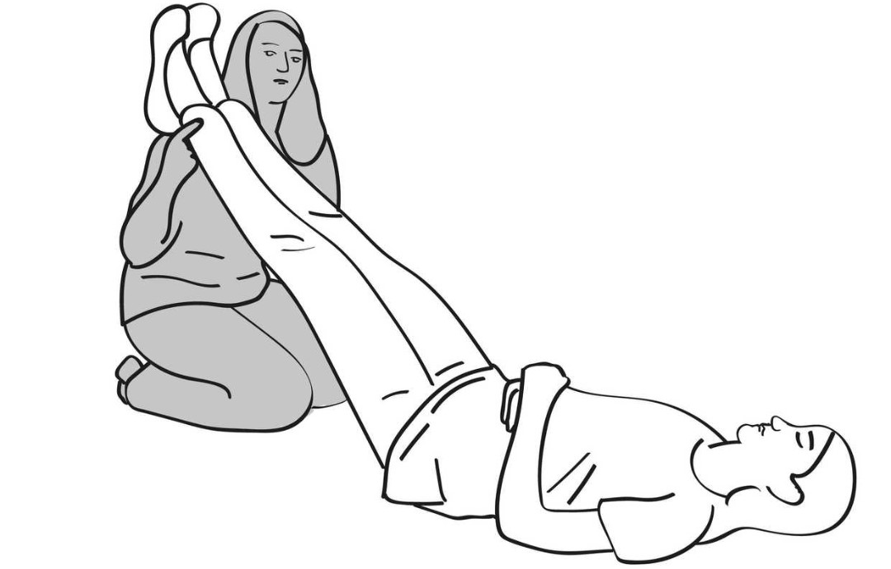
Механізм розвитку колапсу
Преважаюча причина розвитку колапсу - збіднілий кровотік мозку або низький рівень глюкози крові, чи поєднання цих двох причин. 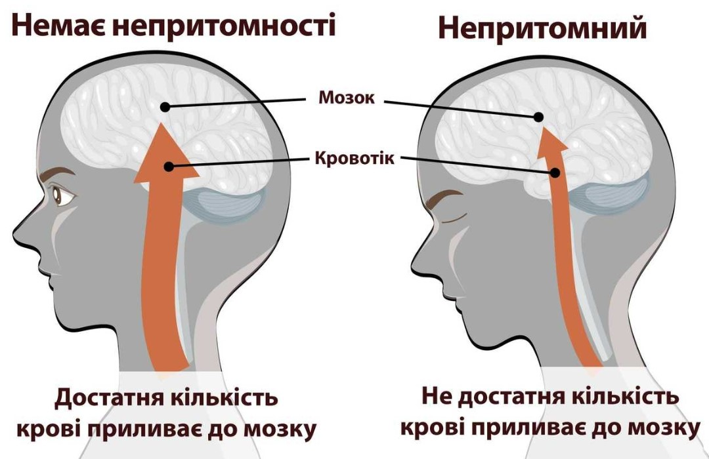
1. Біль.
2. Виснаження.
3. Емоційний стрес (медичні маніпуляції).
4. Перегрів.
5. Перехід з тривалого лежачого стану у вертикальний або сидячий.
6. Гіпервентиляція. 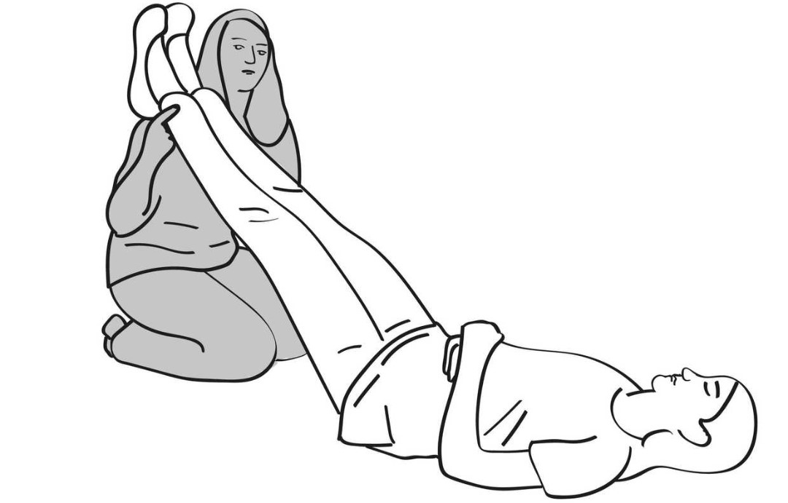
Механізм розвитку колапсу
Преважаюча причина розвитку колапсу - збіднілий кровотік мозку або низький рівень глюкози крові, чи поєднання цих двох причин. 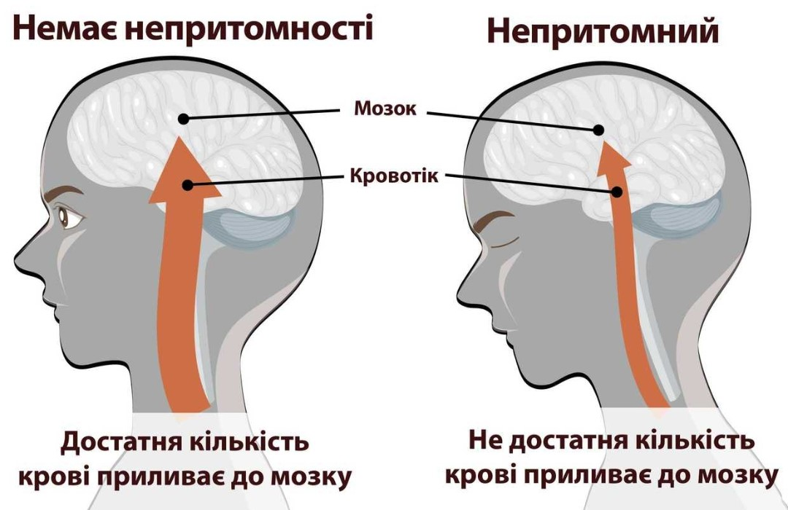
Людина впала у вас на очах:
1. Забезпечте власну безпеку
2. Покладіть її горизонтально. 3. Підніміть ноги під кутом приблизно 45°. Тримайте 10-15 секунд.
4. Якщо людина почала приходити до тями, посадіть і спробуйте вплинути на причину та наслідки непритомності (дайте солодкий напій, прохолодний при підозрі на перегрів, вімкніть кондиціонер тощо).
5. Якщо ефекту від підйому ніг немає протягом 15-20 секунд, викличте швидку та переходьте до дій перевірки дихальних шляхів.
1. Забезпечте власну безпеку
2. Покладіть її горизонтально. 3. Підніміть ноги під кутом приблизно 45°. Тримайте 10-15 секунд.
4. Якщо людина почала приходити до тями, посадіть і спробуйте вплинути на причину та наслідки непритомності (дайте солодкий напій, прохолодний при підозрі на перегрів, вімкніть кондиціонер тощо).
5. Якщо ефекту від підйому ніг немає протягом 15-20 секунд, викличте швидку та переходьте до дій перевірки дихальних шляхів.
Якщо підйом ніг неефективний чи людина тривалий час без свідомості, Вам необхідно викликати швидку самостійно або залучивши помічника.
Звернення по допомогу має бути
адресним або самостійним!
Щоб обрати помічника, адресно зверніться до обраної людини, вказавши на неї рукою.
Наприклад: "Пані/пане, ви можете мені допомогти?"
Якщо людина погодилась дайте їй чітку інструкцію зателефонувати 103/112 та викликати швидку. 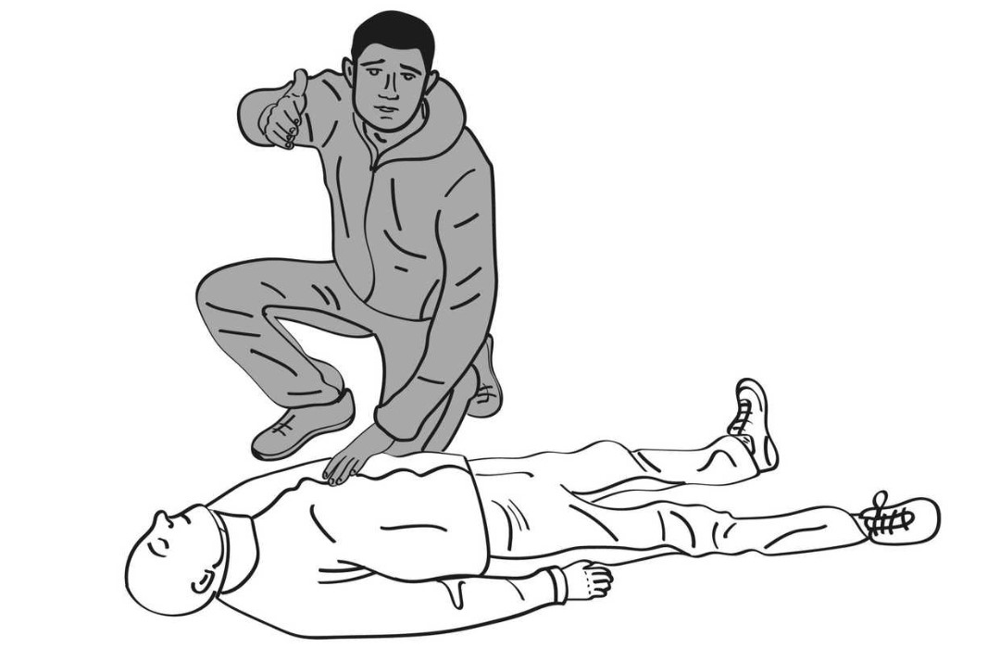
Щоб обрати помічника, адресно зверніться до обраної людини, вказавши на неї рукою.
Наприклад: "Пані/пане, ви можете мені допомогти?"
Якщо людина погодилась дайте їй чітку інструкцію зателефонувати 103/112 та викликати швидку. 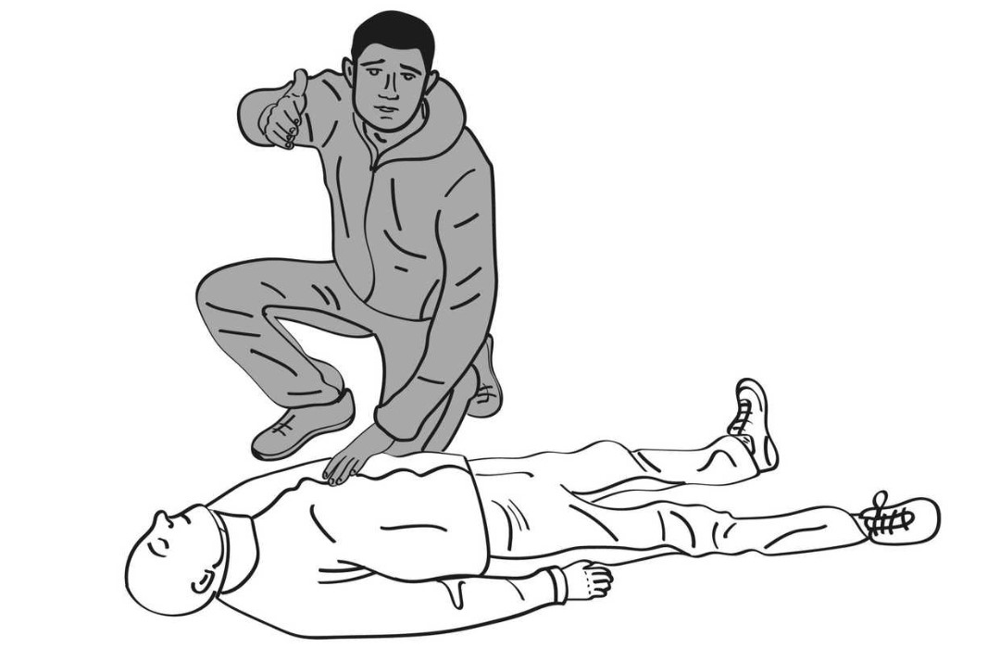
Перевірте дихання.
1. Відкрийте ротову порожнину й огляньте на наявність сторонніх тіл (залишки їжі, жувальна гумка, зйомні зубні протези та інше).
2. Якщо є, то витягніть стороннє тіло.
3. Знайдіть кути нижньої щелепи з обох боків (кісточка, що йде до вуха та підборіддя).
4. Висуньте щелепу вверх та відкрийте рота, натиснувши на підборіддя.
5. Дивіться на живіт та грудну клітку протягом 10 секунд та рахуйте дихання.
Якщо дихання в нормі, ви побачите 2-5 дихальні рухи.
Якщо людина дихає - поверніть її на бік. Якщо не дихає, починайте виконувати СЛР.
1. Відкрийте ротову порожнину й огляньте на наявність сторонніх тіл (залишки їжі, жувальна гумка, зйомні зубні протези та інше).
2. Якщо є, то витягніть стороннє тіло.
3. Знайдіть кути нижньої щелепи з обох боків (кісточка, що йде до вуха та підборіддя).
4. Висуньте щелепу вверх та відкрийте рота, натиснувши на підборіддя.
5. Дивіться на живіт та грудну клітку протягом 10 секунд та рахуйте дихання.
Якщо дихання в нормі, ви побачите 2-5 дихальні рухи.
Якщо людина дихає - поверніть її на бік. Якщо не дихає, починайте виконувати СЛР.
При відсутності свідомості та обов'язково наявності дихання покладіть постраждалого в стабільне бічне положення за методом HAIENS.
Метод HАIENS
Дальню руку постраждалого підніміть вверх.
Ближню руку покладіть долонею на протилежну пахву.
Ближню до вас ногу зігніть в коліні та поставте на стопу, тримайте за коліно.
Вільною рукою зафіксуйте потиличну частину голови та шию.
Штовхайте зігнуту ногу (вона працює як важіль), повертайте людину на бік, при цьому надійно фіксуйте голову і шию.
Покладіть голову на підняту та випрямлену руку, натисніть на підборіддя і відкрийте рота.
Верхню ногу покладіть під кутом 90° до тіла.
Долоню витягніть з під пахви.
Слідкуйте за диханням до приїзду швидкої.
Метод HАIENS
Дальню руку постраждалого підніміть вверх.
Ближню руку покладіть долонею на протилежну пахву.
Ближню до вас ногу зігніть в коліні та поставте на стопу, тримайте за коліно.
Вільною рукою зафіксуйте потиличну частину голови та шию.
Штовхайте зігнуту ногу (вона працює як важіль), повертайте людину на бік, при цьому надійно фіксуйте голову і шию.
Покладіть голову на підняту та випрямлену руку, натисніть на підборіддя і відкрийте рота.
Верхню ногу покладіть під кутом 90° до тіла.
Долоню витягніть з під пахви.
Слідкуйте за диханням до приїзду швидкої.
1. Раптове порушення серцевого ритму (мова про два найгірші варіанти, описані нижче).
2. Недостатнє кровопостачання серцевого м'яза - міокарда (стенокардія, інфаркт міокарда). Пояснення про елементарні механізми гемодинаміки на прикладі піднятих рук, зменшення кровотоку під дією гравітації, та приклад з навантаженням на литкові м'язи при частих відриваннях п'яток від підлоги (моделювання навантаження зі збільшенням потреби у кисні). В обох випадках виникають больові відчуття, котрі пояснюються недостатнім кровотоком у м'язах, що є зрозумілою ілюстрацією механізму дефіциту кровопостачання серцевого м'язу.
3. Недостатність насосної функції серця (ураження коронавірусом, стрептококом). Частину м'язової тканини "з'їдає" вірус або бактерія, і цю ділянку заміщає фіброзна тканина, котра не має здатності до скрочення. Таке серце збільшується в розмірі, погано прокачує кров, з'являються ознаки серцевої недостатності, що в важких випадках може призвести до його зупинки.
4. "Спортивне серце" - здорові коронарні судини, але навантаження перевищує можливості, виникає дисонанс між потребою у кисні та швидкістю його доставки. Футбол класичний приклад асиметричних, сверхінтенсивних навантажень в короткий проміжок часу, що регулярно призводить молодих, здорових атлетів до зупинки серця під час матчів.
Фібриляція шлуночків 75-90% випадків. Фібриляція (fibrillatio) - з латині перекладається як "миготіння, посмикування". Збій у системі проведення електричного імпульсу з синусового вузлу (в правій верхній частині серця). Більшість структурних одиниць серцевого м'язу - жива, як армія без командування, кожне серцеве волокно рухається в своєму ритмі, десінхронізовано, серцевий викид в такій ситуації дорівнює нолю. На ЕКГ (правий малюнок) це має вигляд "осциляцій" - зигзагоподібних ліній, на початку - високоамплітудних, за відсутності ефективних дій амплітуда буде знижуватися, аж до поки зигзаги не вирівняються в пряму лінію - асистолію.
Асистолія 5-10% випадків. Це фінальний стан нерухомості і електричної неактивності структурних м'язових одиниць серця. Вірогідність оживлення і поновлення роботи серця в такому випадку дуже низька. 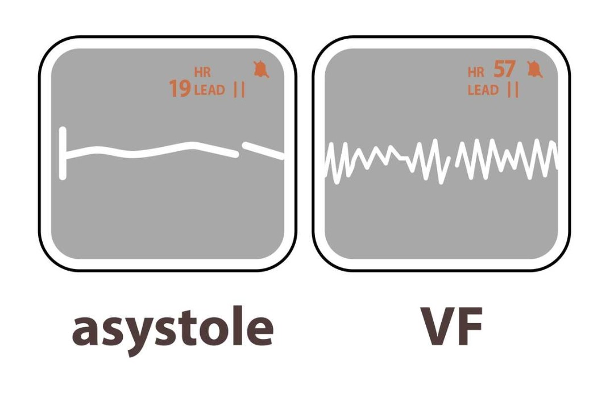
Асистолія 5-10% випадків. Це фінальний стан нерухомості і електричної неактивності структурних м'язових одиниць серця. Вірогідність оживлення і поновлення роботи серця в такому випадку дуже низька. 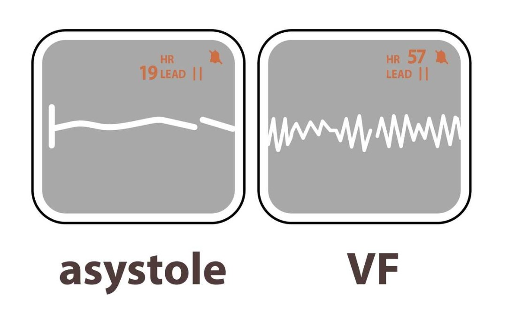
У крові немає запасів кисню, тому мозок майже миттєво відчує його нестачу.
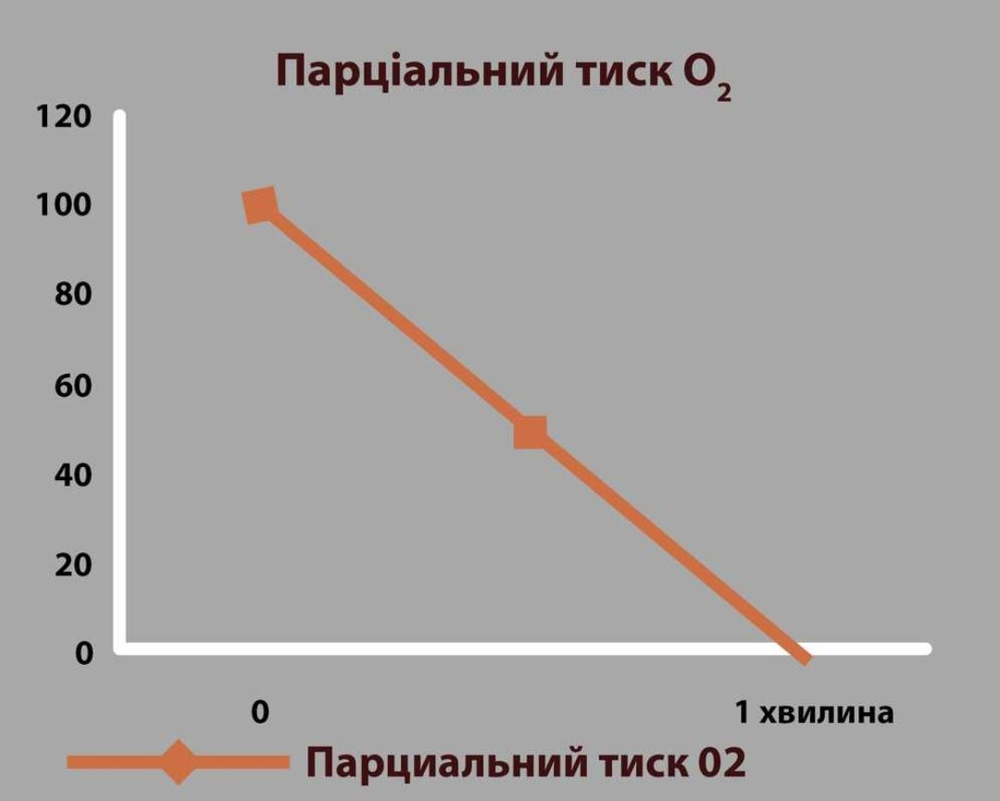
1. Клінічна.
2. Соціальна.
3. Смерть мозоку.
4. Біологічна.
У разі зупинки серця стадія клінічної смерті буде тривати від 3 до 6 хвилин, потім вона зміниться стадією загибелі кори і, невдовзі, всього мозоку. Приблизно з 20-ї хвилини від зупинки серцевої діяльності почнуть з'являтися ознаки біологічної смерті, котрі вже чітко будуть помітні за 40 хвилин від зупинки кровообігу. 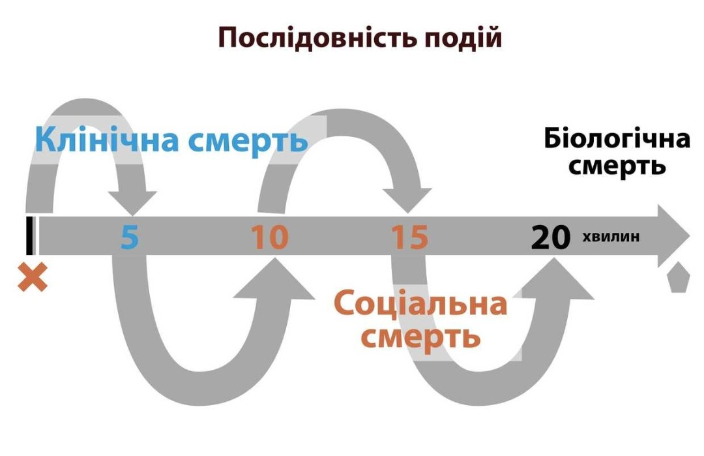
У разі успішних дій в перші декілька хвилин (серцева діяльність відновлена) людина повертається в свій базовий стан (такою як була: відновлюється дихання, повертається свідомість, немає ознак неврологічного дефіциту).
Якщо серце запрацювало через 10 хвилин після зупинки, більшу частину цього часу кровообігу мозоку не було, або він був недостатнім чи страждало насичення крові киснем, чи комбінація першого та другого - результатом може бути відновлення дихання, свідомості, але можуть бути присутні неврологічні зміни на кшталт постінсультних. Ці зміни можуть бути тимчасовими або постійними в залежності від масштабу ураження мозоку. Відсутність кровотоку мозоку протягом 15 хвилин з наступним відновленням роботи серця дуже вірогідно призведе до загибелі кори мозоку та переходу у вегетативний стан.
Відновлення роботи серця після 20 хвилин відсутності кровотоку, статистично дуже маловірогідно: починаються незворотні процеси, притаманні стадії біологічної смерті.
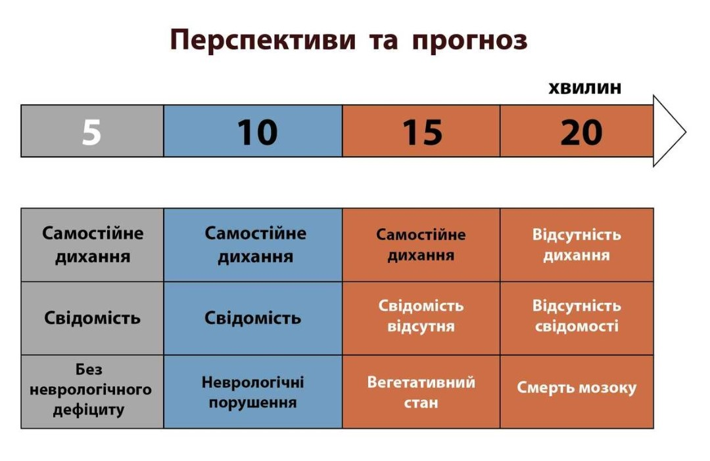
Якщо людина не дихає, її серце не працює. Розпочніть серцево-легеневу реанімацію.
Важливо! Тренування серцево-легеневій реанімації виконується лише на манекенах.
Важливо! Тренування серцево-легеневій реанімації виконується лише на манекенах.
Важливо! Тренування сердево-легеневій реанімації виконується лише на манекенах.
Виконуйте СЛР за наступними правилами:
1) Точки тиску межа середньої та нижньої третин груднини.
2) Оптимальне положення рук - "замок" (пальці нижньої руки паралельно ребрам і не торкаються постраждалого).
3) Швидкість натискань 100-120 на хвилину.
4) Глибина натискань 5-6 см. 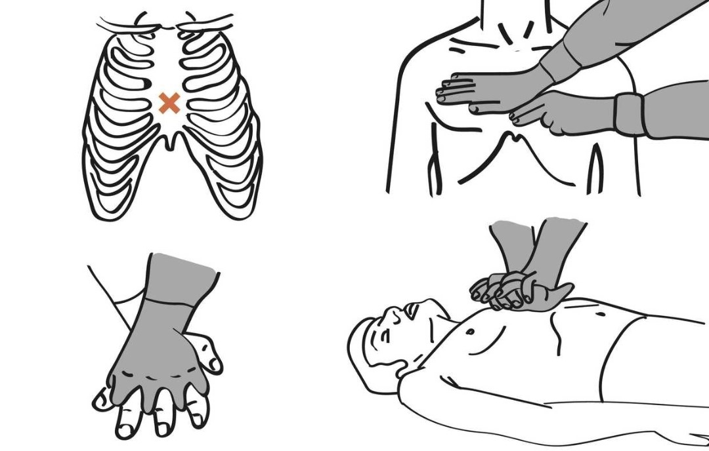
Виконуйте СЛР за наступними правилами:
1) Точки тиску межа середньої та нижньої третин груднини.
2) Оптимальне положення рук - "замок" (пальці нижньої руки паралельно ребрам і не торкаються постраждалого).
3) Швидкість натискань 100-120 на хвилину.
4) Глибина натискань 5-6 см. 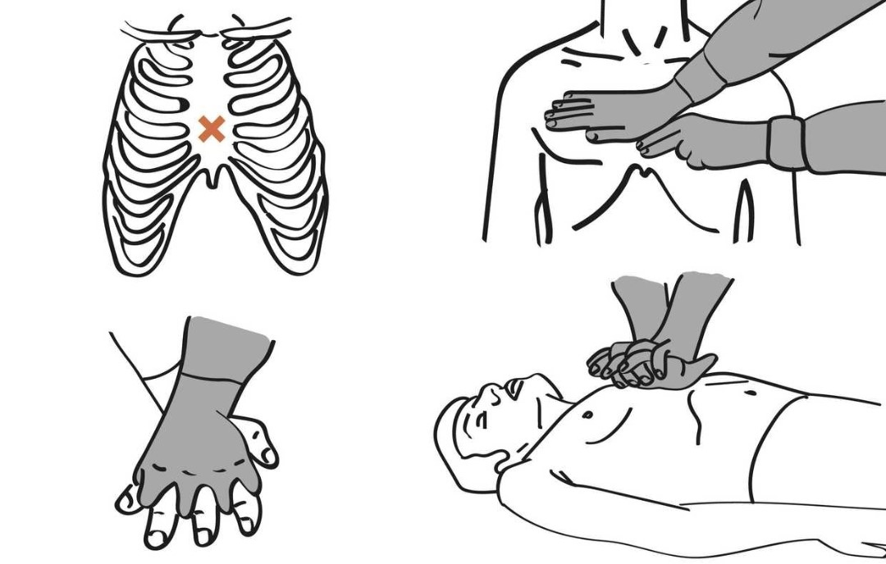
Важливо! Тренування серцево-легеневій реанімації виконується лише на
манекенах.
Покладіть два пальці на нижній край грудини, перпендикулярно їй.
Основу іншої долоні поставте вздовж грудини, відразу поряд з пальцями.
Замкніть руки в замок. 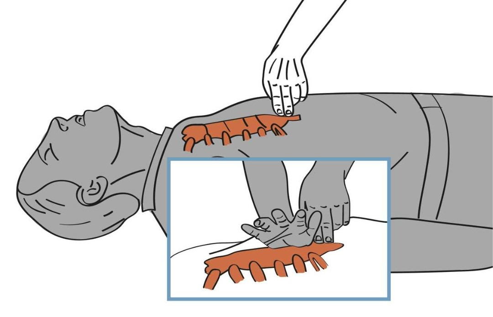
Покладіть два пальці на нижній край грудини, перпендикулярно їй.
Основу іншої долоні поставте вздовж грудини, відразу поряд з пальцями.
Замкніть руки в замок. 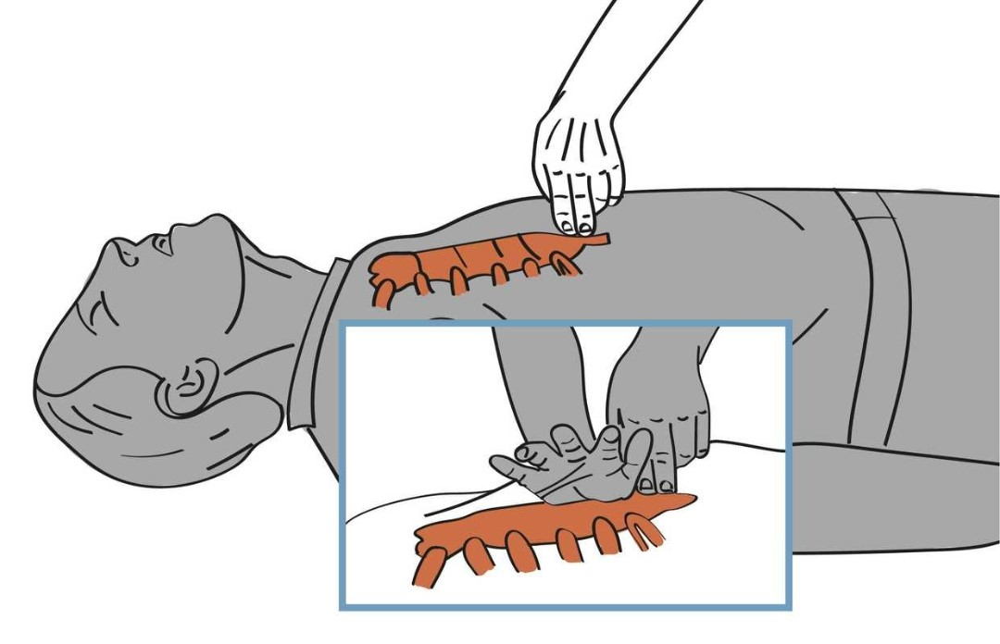
Важливо! Тренування серцево-легеневій реанімації виконується лише на манекенах.
Зона щільного контакту долоні з поверхнею грудної клітки доволі мала. Основа долоні має лежати вздовж грудини. 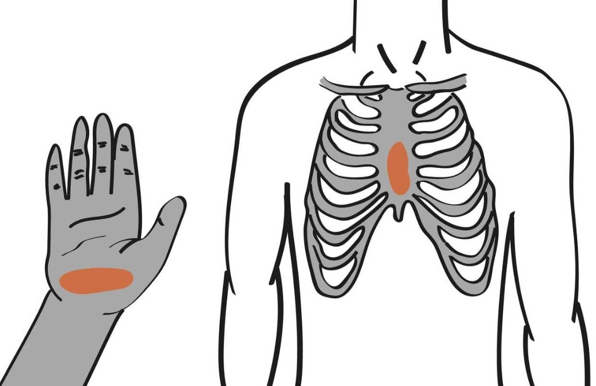
Зона щільного контакту долоні з поверхнею грудної клітки доволі мала. Основа долоні має лежати вздовж грудини. 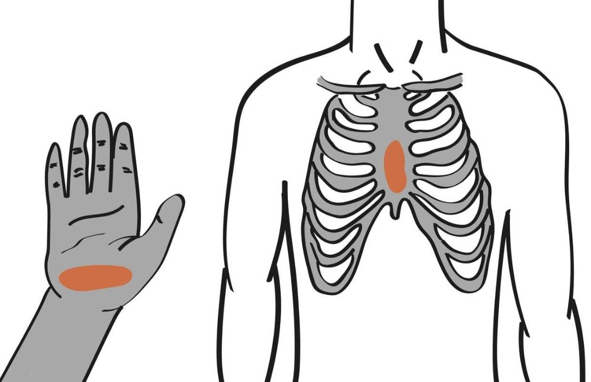
Механізм дії при непрямому масажі серця.
З кожним натисканням, серце постраждалого буде стискатись між грудиною та хребтом.
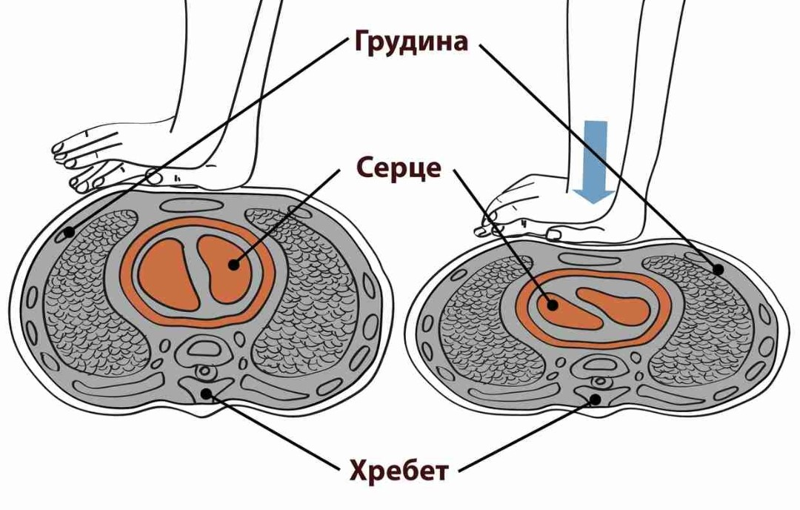
Це забезпечить штучну підтримку кровообігу та кровопостачання головного мозку.
Це забезпечить штучну підтримку кровообігу та кровопостачання головного мозку.
Правильна поза рятувальника - запорука ефективного масажу серця.
Руки рятувальника розігнуті в ліктях. Плечі над руками, тиснемо на грудну клітку всією вагою свого тіла.
Коліна рятувальника біля тіла постраждалого. 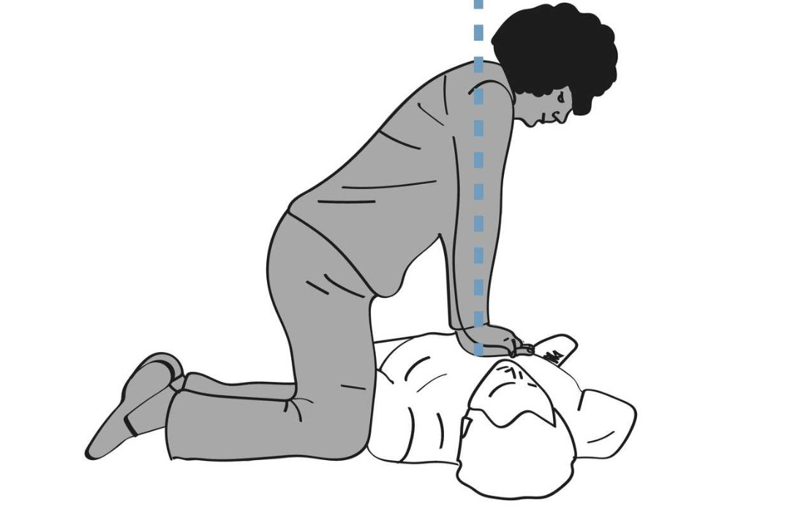
Руки рятувальника розігнуті в ліктях. Плечі над руками, тиснемо на грудну клітку всією вагою свого тіла.
Коліна рятувальника біля тіла постраждалого. 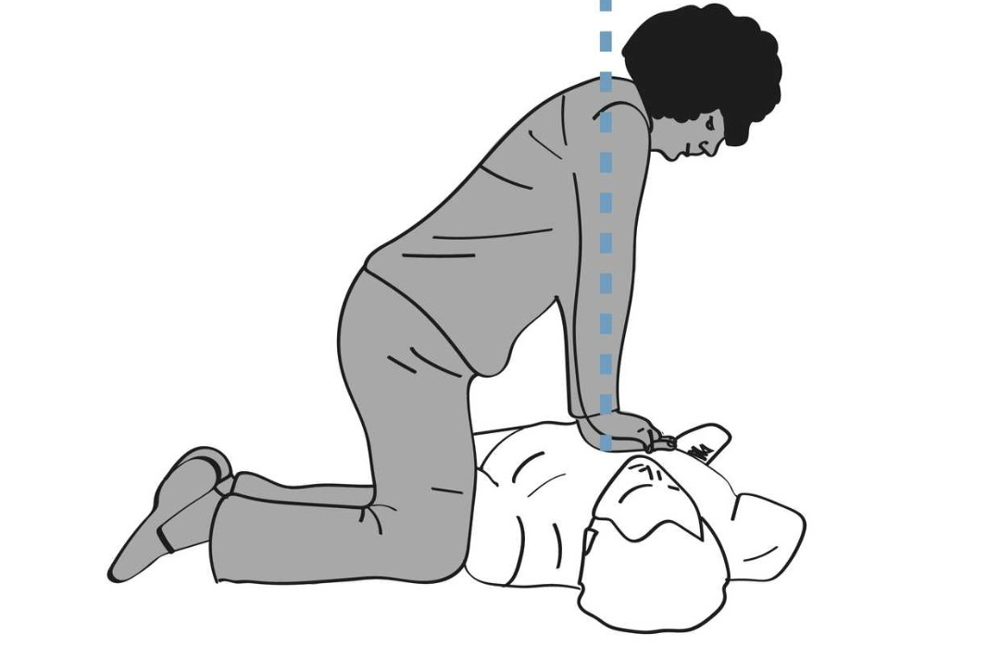
Продовжуйте СЛР:
1. До приїзду швидкої.
2. До відновлення самостійного дихання.
3. Допоки у вас вистачає сил.
1. До приїзду швидкої.
2. До відновлення самостійного дихання.
3. Допоки у вас вистачає сил.
Використайте автоматичний зовнішній дефібрилятор (АЗД), якщо він є в доступі
АЗД, розміщені в громадських місцях, позначають серцем, хрестиком та блискавкою на зеленому тлі.
Попросіть помічника принести дефібрилятор якнайшвидше, проводьте непрямий масаж серця весь цей час. 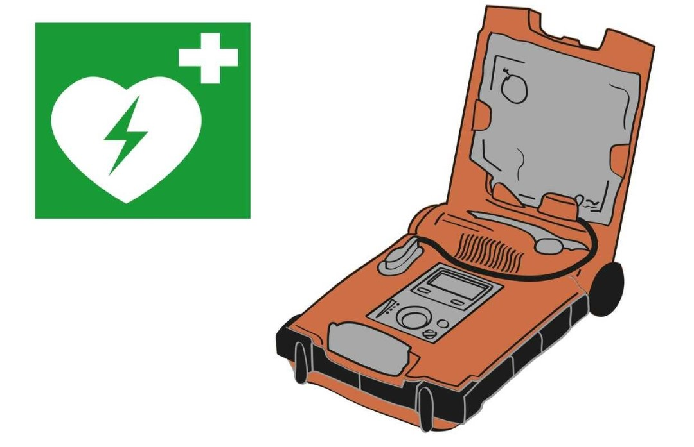
Увімкніть дефібрилятор. Слухайте та виконуйте голосові команди. Натисніть кнопку '"'"розряд"" за командою. Продовжуйте непрямий масаж серця. 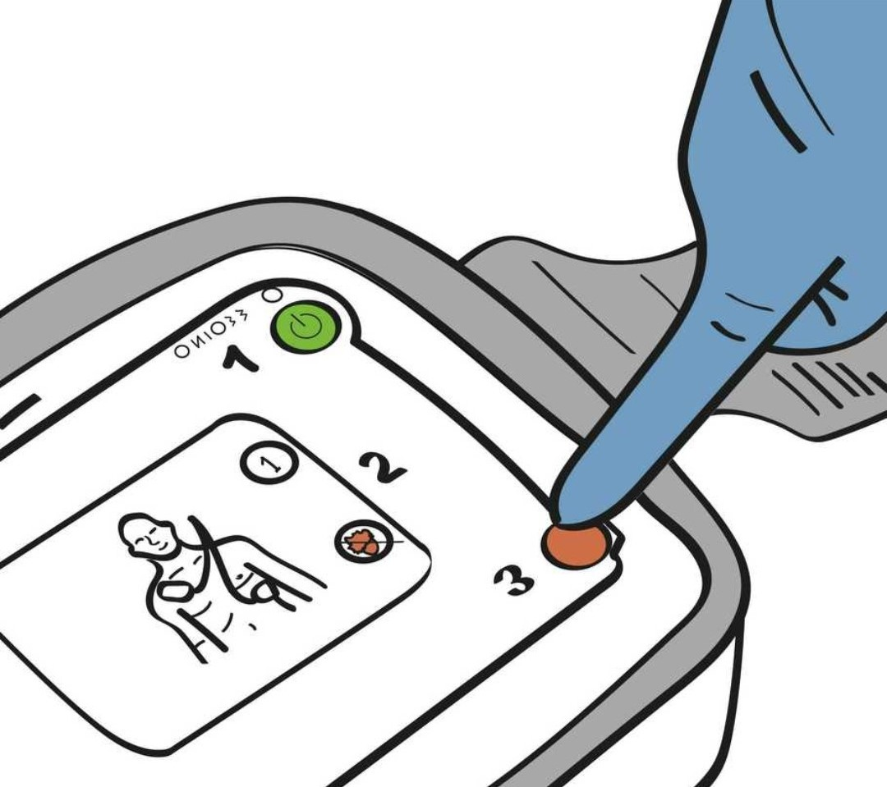
АЗД, розміщені в громадських місцях, позначають серцем, хрестиком та блискавкою на зеленому тлі.
Попросіть помічника принести дефібрилятор якнайшвидше, проводьте непрямий масаж серця весь цей час. 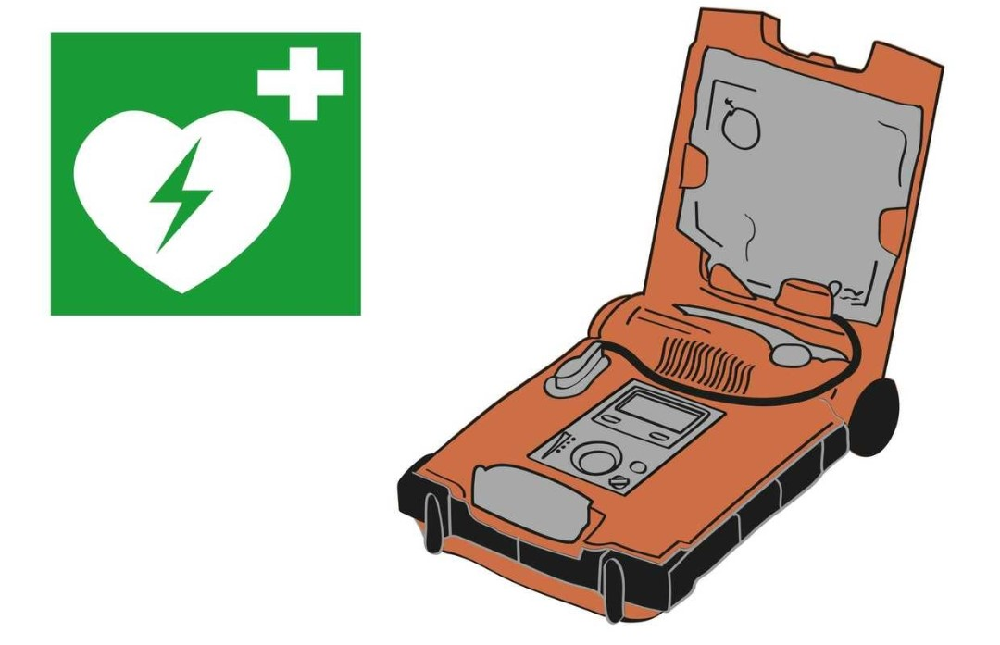
Увімкніть дефібрилятор. Слухайте та виконуйте голосові команди. Натисніть кнопку '"'"розряд"" за командою. Продовжуйте непрямий масаж серця. 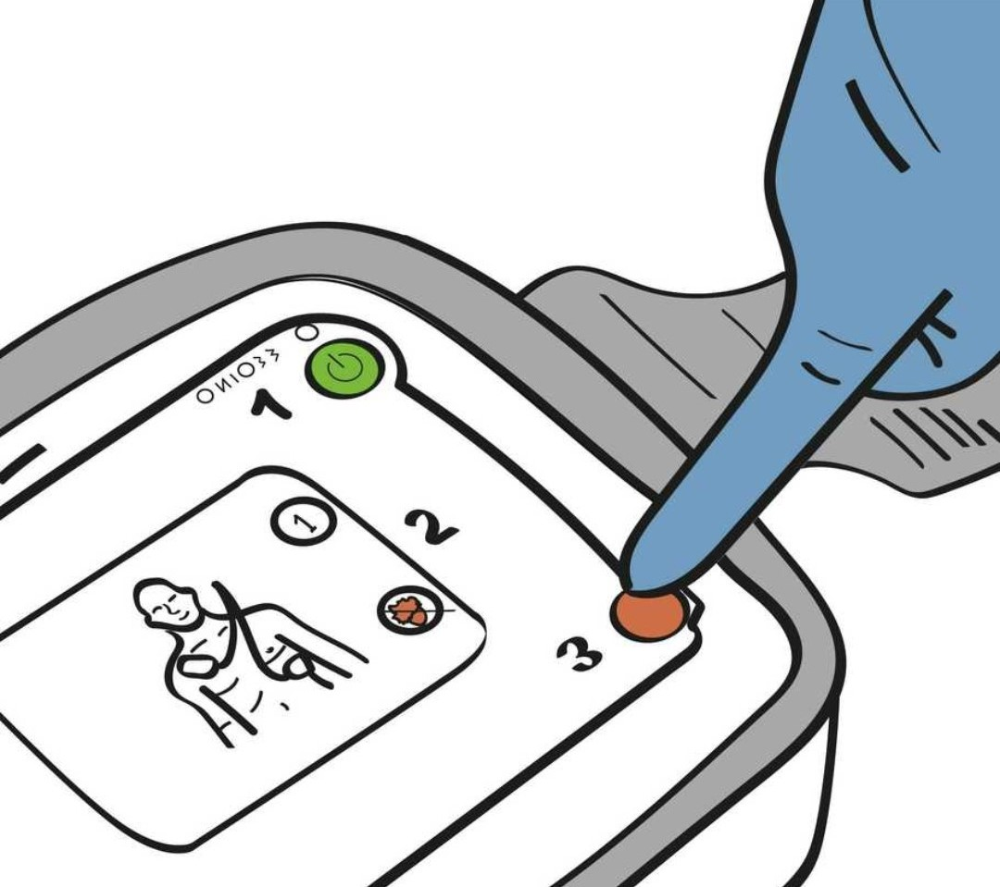
Обов'язково виконайте правильне розташування електродів на поверхні тіла постраждалої людини
Накладіть електроди на ОГОЛЕНУ грудну клітку постраждалого, як показано на схемі. 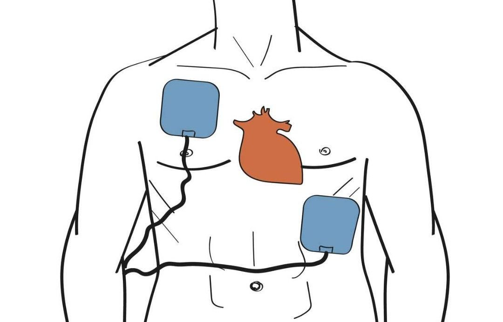
Накладіть електроди на ОГОЛЕНУ грудну клітку постраждалого, як показано на схемі. 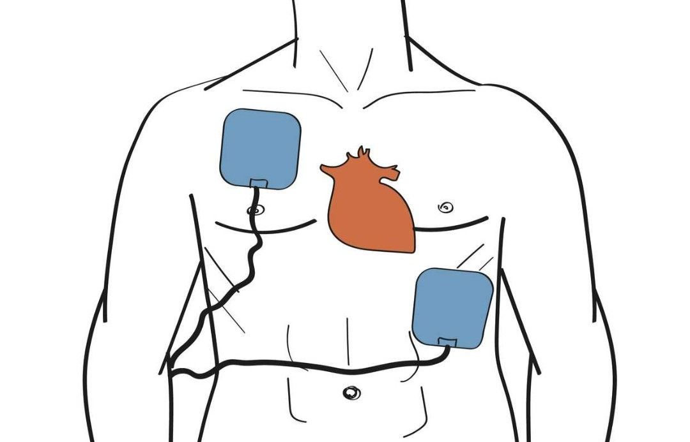
This is the second item's accordion body. It is hidden by default, until the collapse plugin adds the appropriate classes that we use to style each element. These classes control the overall appearance, as well as the showing and hiding via CSS transitions. You can modify any of this with custom CSS or overriding our default variables. It's also worth noting that just about any HTML can go within the
.accordion-body, though the transition does limit overflow.
This is the third item's accordion body. It is hidden by default, until the collapse plugin adds the appropriate classes that we use to style each element. These classes control the overall appearance, as well as the showing and hiding via CSS transitions. You can modify any of this with custom CSS or overriding our default variables. It's also worth noting that just about any HTML can go within the
.accordion-body, though the transition does limit overflow.
This is the third item's accordion body. It is hidden by default, until the collapse plugin adds the appropriate classes that we use to style each element. These classes control the overall appearance, as well as the showing and hiding via CSS transitions. You can modify any of this with custom CSS or overriding our default variables. It's also worth noting that just about any HTML can go within the
.accordion-body, though the transition does limit overflow.
This is the third item's accordion body. It is hidden by default, until the collapse plugin adds the appropriate classes that we use to style each element. These classes control the overall appearance, as well as the showing and hiding via CSS transitions. You can modify any of this with custom CSS or overriding our default variables. It's also worth noting that just about any HTML can go within the
.accordion-body, though the transition does limit overflow.